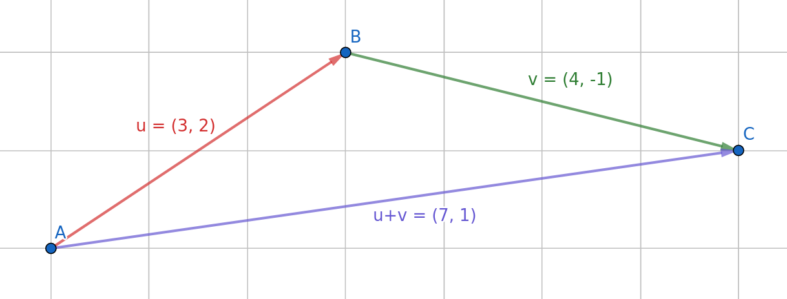
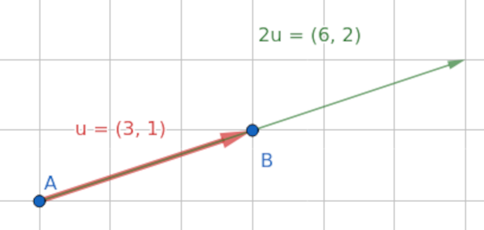

Segmento orientado es decir, una flecha
Sean los puntos \[A\] y \[B\] del plano, el vector fijo \[\vec{AB}\] es el vector con origen \[A\] y extremo \[B\]
Sus características son:\[A(a_1, a_2)\] y \[ B(b_1,b_2)\]
\[\vec{AB} = (b_1 - a_1, b_2 - a_2)\]
Sea \[\vec{AB}(v_1,v_2)\] un vector su módulo es:
\[|\vec{AB}| = \sqrt{x^2 + y^2}\]
1Dado los puntos del plano A(-2,3); B(1,7); C(6,7) y D(3,3). Representa los siguientes vectores, calcula sus coordenadas y su módulo:
Son aquellos que tienen las mismas características (módulo dirección y sentido). También tienen las mismas coordenadas.
Es el conjuntos de todos los vectores equipolentes.
Se suele denotar por las coordenadas de cualquiera de sus vectores fijos representente.
2¿Cuáles de los vectores calculados en el ejercicio 1 son equipolentes? Indica y representa un par de puntos que definan un vector equipolente a \[\vec{AC}\]
De forma gráfica
De forma analítica...
\[(x_1, y_1) \pm (x_2, y_2) = (x_1 \pm x_2, y_1 \pm y_2)\]
3Representa y calcula de forma analítica la suma de los siguientes vectores:
De forma gráfica
De forma analítica...
\[\lambda (x_1, y_1) = (\lambda \cdot x_1, \lambda \cdot y_1)\]
4Representa y calcula de forma analítica los siguientes productos escalares de vectores:
5Dados los puntos A(2,4), B(5,8) y C(6,4), calcula las coordenadas de los siguientes vectores:
6Calcula los valores de \[x\] e \[y\] para que se verifiquen las siguientes igualdades:
Decimos que un vector \[\vec{w}\] es combinación lineal de otros dos \[\vec{u}\] y \[\vec{v}\] si puede obtenerse de la siguiente forma:
\[\vec{w} = a \cdot \vec{u} + b \cdot \vec{v}\]
Un conjunto de vectores decimos que es linealmente dependiente si hay alguno de ellos que se pueda expresar como combinación lineal de los restantes. En caso contrario decimos que son linealmente independientes.
7Indica si son linealmente independientes los siguientes conjuntos de vectores.
Una base es un conjunto de vectores que nos permite generar cualquier vector a partir de el mediante combinación lineal.
En dos dimensiones (\[\mathbb{R}\]) dos vectores linealmente independientes siempre forman una base.
Dada una base formada por los vectores \[\vec{u}\] y \[\vec{v}\] y un vector \[\vec{w} = a \cdot \vec{u} + b \cdot \vec{v}\] decimos que (a,b) son las coordenadas del vector \[\vec{w}\] con respecto a esa base.
La base formada por los vectores (1,0) y (0,1) se denomina Base Canónica.